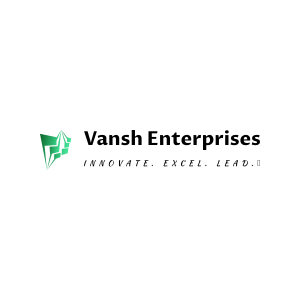

Thank you for reaching out to Vansh Enterprises. Our team will get back to you within 1–2 business days.
A copy of your enquiry has been received at enquiries@vanshenterprises.net
What happens next
Need immediate help? Email us at enquiries@vanshenterprises.net